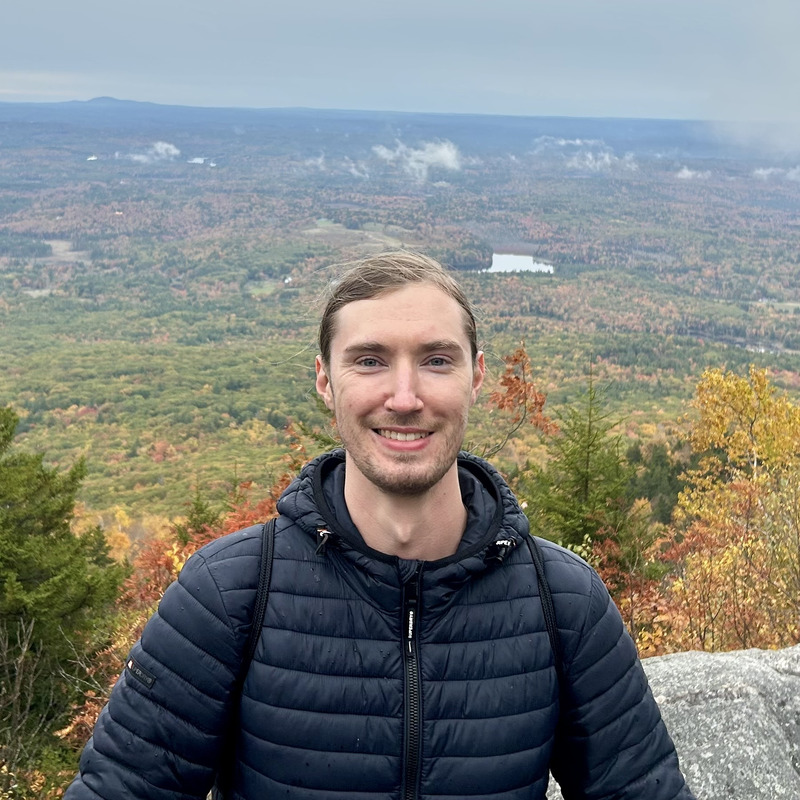
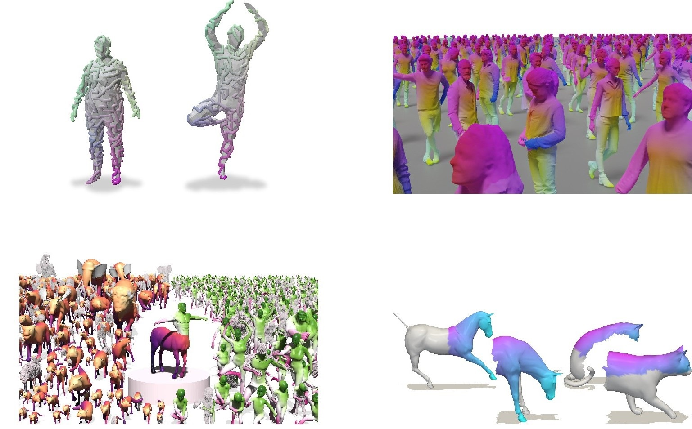
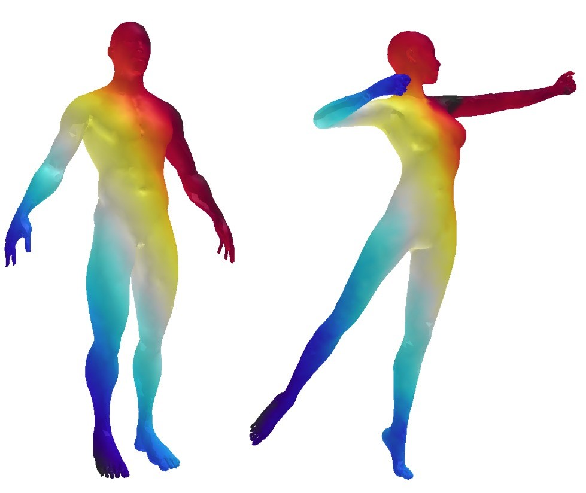

Aleksei Zhuravlev
I am a PhD student in Computer Science at UMass Amherst, advised by Subhransu Maji. I work on single-image 3D reconstruction of animals.
Before that, I was a research intern at the Max Planck Institute for Informatics in Germany and did my MSc at the University of Bonn, working on 3D shape correspondence and diffusion models.
Email / CV / Google Scholar

Research

Non-Rigid 3D Shape Correspondences: From Foundations to Open Challenges and Opportunities
Aleksei Zhuravlev, Lennart Bastian, et al.
Eurographics 2026, State-of-the-Art Report
project page / arXiv
Aleksei Zhuravlev, Lennart Bastian, et al.
Eurographics 2026, State-of-the-Art Report
project page / arXiv
A survey of non-rigid 3D shape correspondence: foundations, current methods, and open challenges.

Denoising Functional Maps: Diffusion Models for Shape Correspondence
Aleksei Zhuravlev, Zorah Lähner, Vladislav Golyanik
CVPR 2025
project page / arXiv / code
Aleksei Zhuravlev, Zorah Lähner, Vladislav Golyanik
CVPR 2025
project page / arXiv / code
A diffusion model for correspondence estimation between deformable 3D shapes, trained on 300k synthetic human and animal shapes.